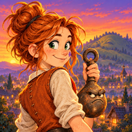
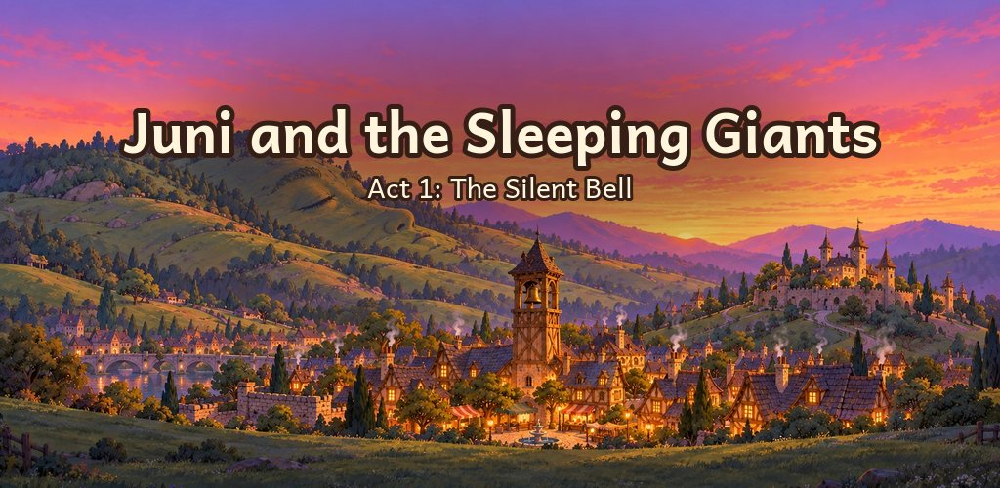
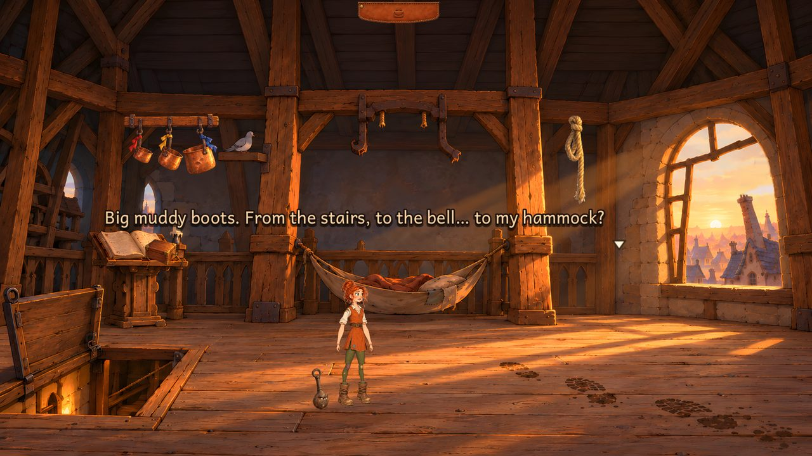
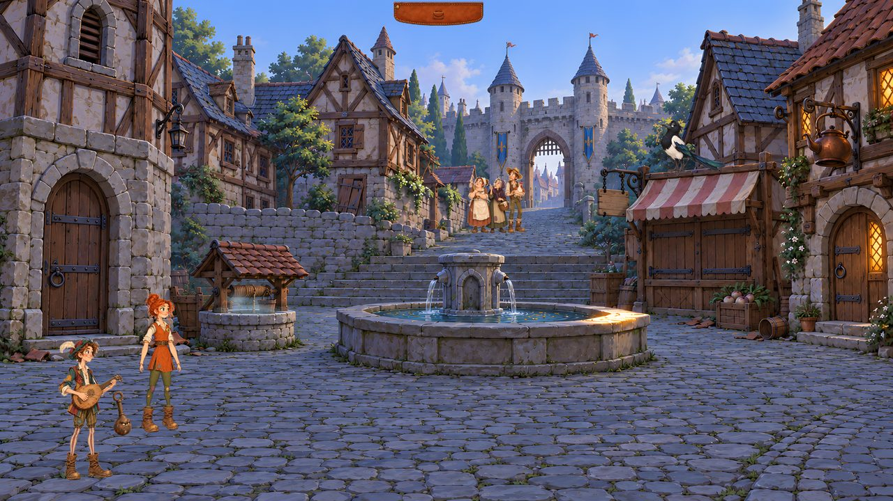
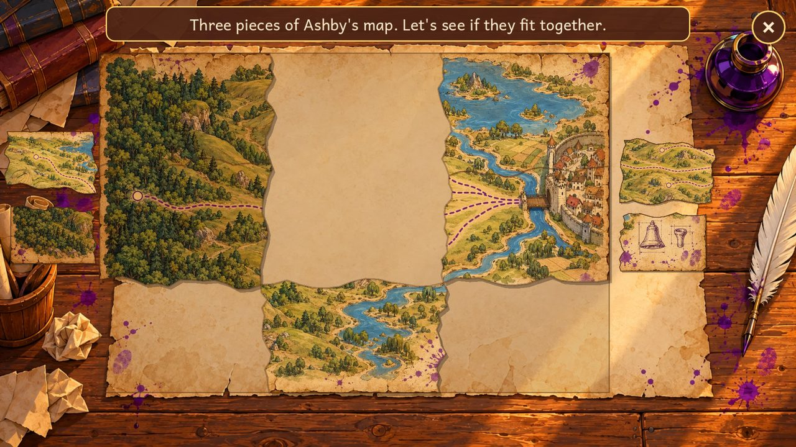
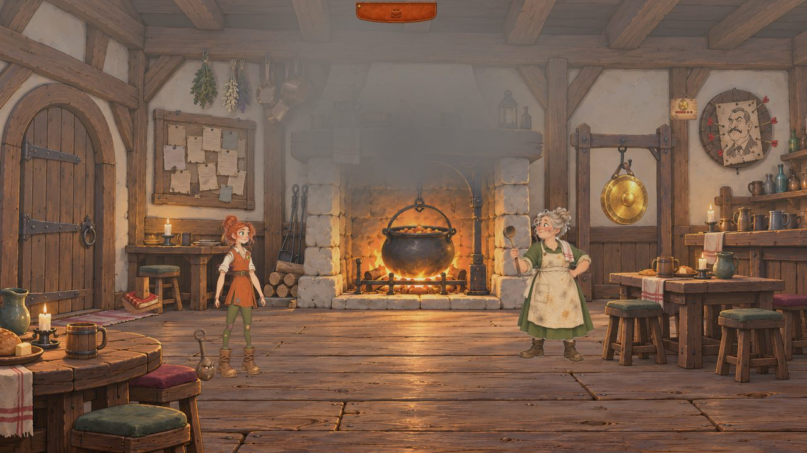
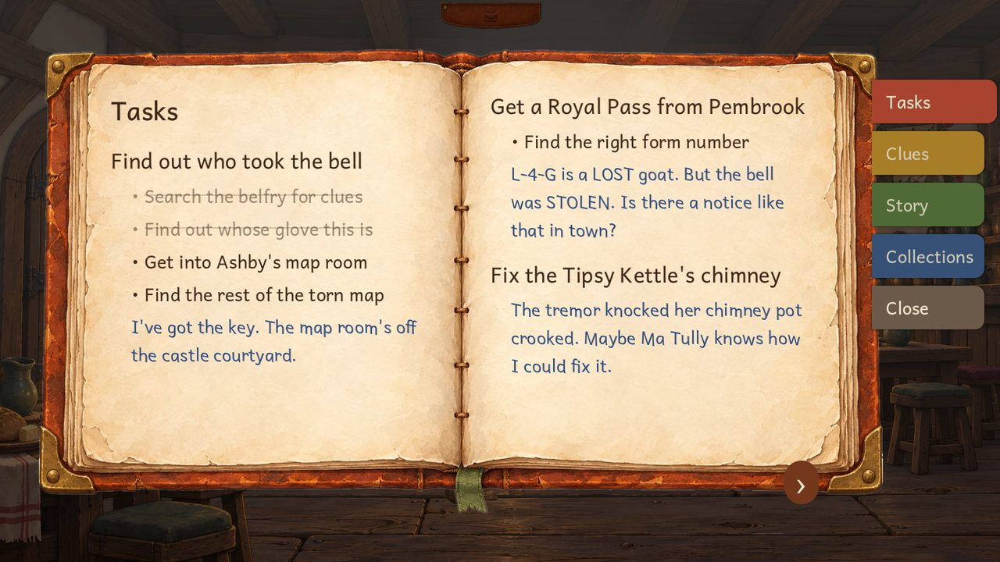
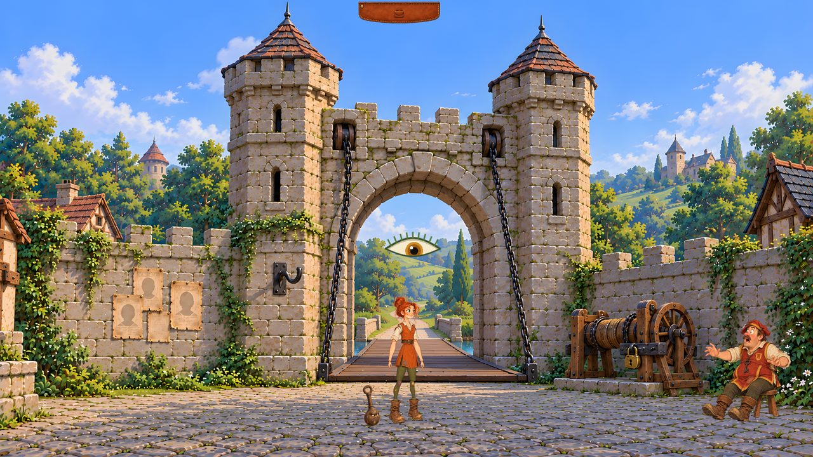

Juni and the Sleeping Giants
A point-and-click fairy tale

In a kingdom built on the backs of five sleeping giants, one bell keeps them dreaming. Then Juni, the bell-ringer’s apprentice, sleeps through the night it’s stolen.
Now the ground is trembling, the giants are stirring, and Juni has seven nights to bring the Lullaby Bell home, with help from Clank, the bell’s grumpy talking clapper.
Free, with nothing to install. It loads about 110 MB the first time, so Wi-Fi is best. It works best on a computer for now.
Download Act 1 for Mac or Windows
Act 1, free to keep. Unzip it and open the game. Mac: about 160 MB, for Apple Silicon or Intel Macs. Windows: about 130 MB, for 64-bit Windows 10 or 11; if Windows says it protected your PC, choose More info, then Run anyway.
A hand-painted adventure
- Explore the town of Kettleby, the castle, and a forest growing in a giant’s beard.
- Tap anything: everything answers back, and most things have a joke.
- Fair puzzles with no dead ends, and Clank on hand with a hint when you’re stuck.
- Find the 21 Lost Notes hidden across the kingdom and hear each one in Master Thrum’s music box.
- Fully voiced, with Juni’s notebook to keep track of goals and clues.
- Larger text and automatic dialogue in the settings.
Made for ages 9 and up, and for anyone who grew up on classic adventure games. No ads, no accounts, and the game collects no data.
Screenshots






Questions?
See the support page, or write to amaltasgames@concinnity.in.